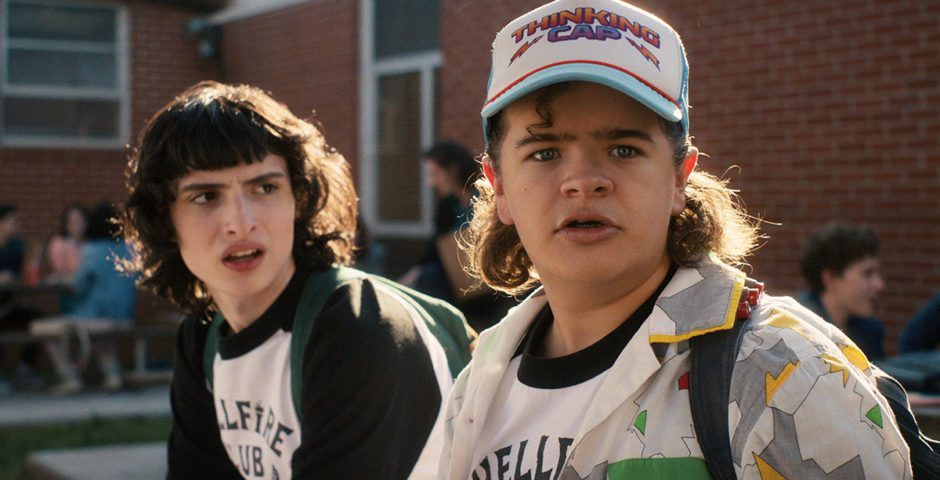

1) Шоу першопочатково мало називатися «Монтаук» і зніматися на Лонг-Айленді, проте локацію змінили, бо там було б дуже складно проводити зйомки взимку. Режисери серіалу надихалися історіями про те, що у 80-х на Лонг-Айленді начебто проводили експерименти над викраденими дітьми.
2) Спершу Міллі Боббі Браун (11) не доводилось вчити багато реплік – її героїня за перший сезон серіалу каже лише 42 рядочки тексту.
3) Більш ніж 1000 дітей взяли участь у прослуховуванні для серіалу (906 хлопчиків та 307 дівчаток). Уяви собі, якою великою була ймовірність того, що персонажів гратимуть інші актори, ніж ті, яких ми знаємо!

4) Четвертий сезон знімався впродовж двох років. До нього було залучено дев’ять сценаріїв – загалом 800 сторінок й тисячі сцен з візуальними ефектами.
5) Брати Даффери переконували Вайнону Райдер зіграти Джойс впродовж зустрічі, яка тривала чотири з половиною години. Проте, як зазначають режисери, більшість часу вони витратили на знайомство та обговорення спільних інтересів – Вайнона досить швидко погодилася взяти участь у шоу.